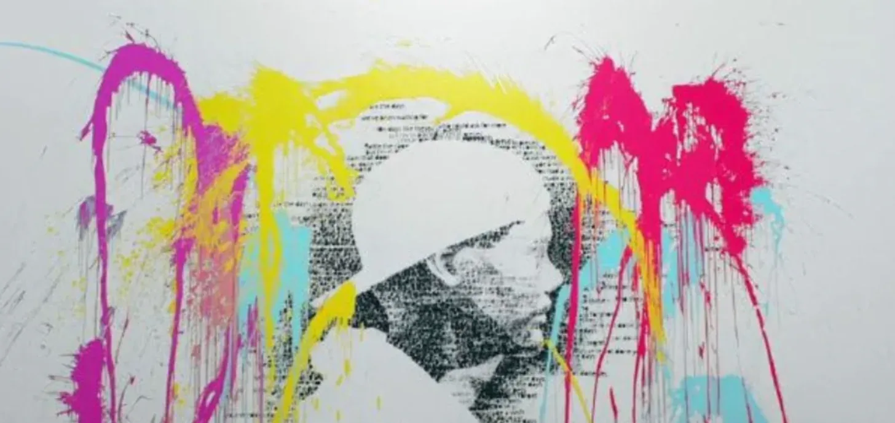
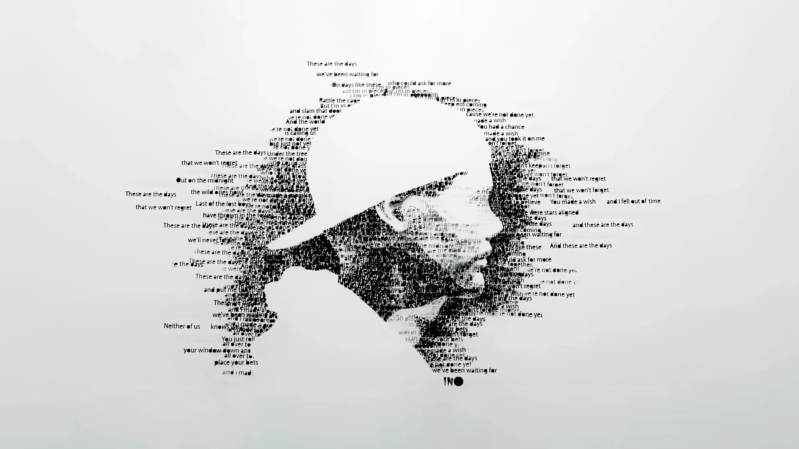

Music videos
The Days & beyond · 2014–2016
About the project
Between 2014 and 2016 David created visuals and music videos for Avicii.
The lyric video for The Days builds his portrait from the song’s own words.


Visuals and music videos for Avicii, between 2014 and 2016.
↓Between 2014 and 2016 David created visuals and music videos for Avicii.
The lyric video for The Days builds his portrait from the song’s own words.

